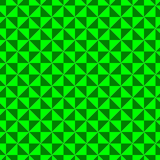
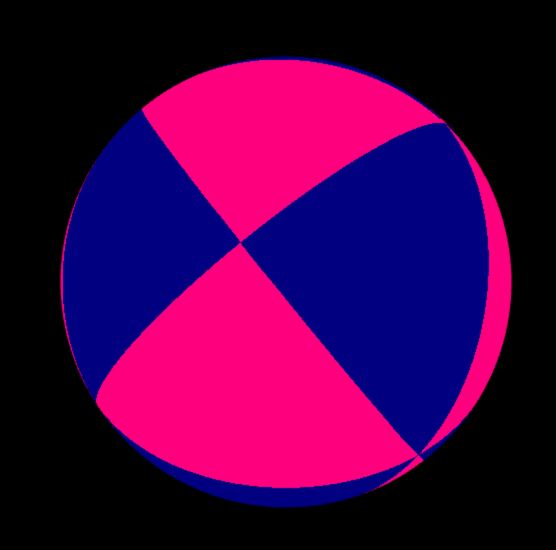
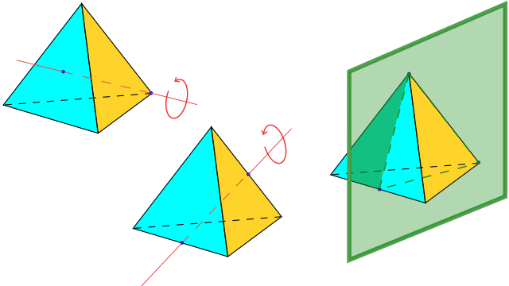
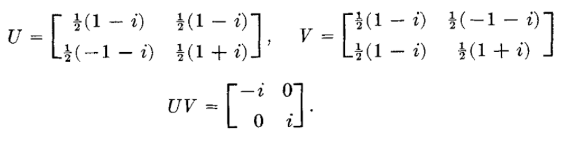
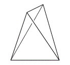
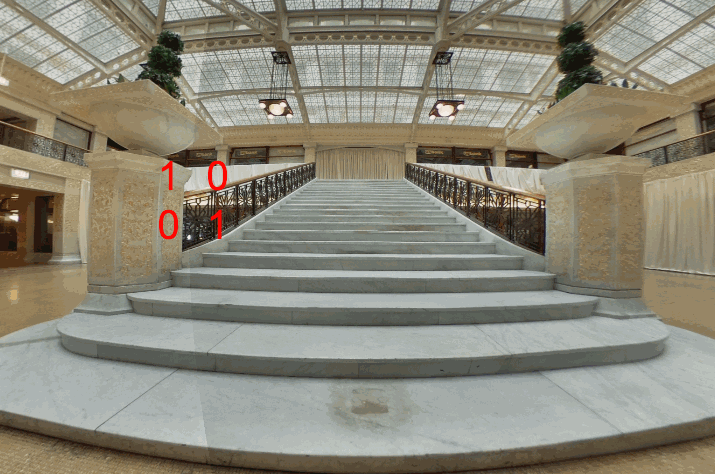
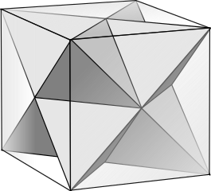

I was curious how one would go about rendering a triangle group using Möbius transforms. It took a while! I wanted to jot down the underlying theory so I wouldn’t forget it later. Perhaps these notes will be of interest to others as well. Here goes:
Given a triangle with angles π/l, π/m, π/n, you can tile a plane if 1/l + 1/m + 1/n = 1. For instance if l,m,n = 2, 4, and 4 respectively, then the sum of the angles of the triangle is π/2 + π/4 + π/4 = π, and you can tile a plane with isosceles right triangles which would look something like this [1]:

A (2,4,4) tiling of the plane.
That’s what a tiling of a Euclidean plane looks like. What does a tiling of a sphere look like?
The sum of the angles of a spherical triangle is always greater than π. There are only a few values for l,m,n that form a pattern covering the sphere just once without any overlaps or gaps. The possible values for (l,m,n) are[2]:
(p p 1), (p 2 2), (3 3 2), (4 3 2), (5 3 2).
The sides of these triangles form great circles or geodesics.
Let’s look in detail at the (3 3 2) tiling. This fundamental region is a triangle with angles: π/3, π/3, π/2. This is another isosceles right triangle. The total sum of the angles is 7π/6. The area of a single triangle (for sphere radius = 1) is π/6. Since the total area of the unit sphere is 4π, it will take 24 of our triangles to the tile the sphere. If we did so, we’d get a result like this:

A (2,3,3) tiling of the plane.
There are 6 points where 4 vertices (each of angle π/2) meet, and 8 points where 6 vertices (each of angle π/3) meet. The symmetries consist of rotations and reflections.
Rotations: there are 3 axes with order 2 rotation and 4 axes with order 3 rotation (antipodal points share an axis). And we count the identity (no rotation) as one of the rotations. So altogether:
- 1 identity rotation (no rotation)
- 4×2 rotations, (not 4×3 since we don’t want to double count the identity),
- 3×1 rotations, (not 3×2 since we don’t want to double count the identity),
1 + 4×2 + 3×1 = 12 rotational symmetries altogether.
Reflections: The illustration immediately below shows 3 possible reflection planes for our tiling. But this is not all of the possible planes of reflection of course. Each plane in the illustration corresponds to one of the great circles (aka geodesics) traced out by the sides of the triangles: each such great circle is a plane of rotation. There are 6 of these great circles in this tiling. To these 6 reflections are added 6 so-called roto-reflections, in which, using the same 6 planes, a rotation by π is followed by a reflection.

3 of the 12 possible reflection symmetry planes for the (3,2,2) triangle tiling.
The group of 12 rotations and 12 reflections corresponds to the group S4, which is of order 4! = 24.
So what about tetrahedrons? At some point this article has to mention tetrahedrons, given the title.
Wikipedia says: “A regular tetrahedron has 12 rotational (or orientation-preserving) symmetries, and a symmetry order of 24 including transformations that combine a reflection and a rotation.
The group of all symmetries is isomorphic to the group S4, the symmetric group of permutations of four objects, since there is exactly one such symmetry for each permutation of the vertices of the tetrahedron.”
And indeed the following diagram also from wikipedia [4] shows that the rotations and reflections of a tetrahedron correspond exactly to those of the (3,3,2) triangle group that we have been working with.

The proper rotations, (order-3 rotation on a vertex and face, and order-2 on two edges) and reflection plane (through two faces and one edge) in the symmetry group of the regular tetrahedron. (image from: https://en.wikipedia.org/wiki/Tetrahedron)
This tetrahedral group “arises if we inscribe a regular tetrahedron in a sphere and mark its vertices together with the projections of the centers of the faces and the midpoints of the edges on the the sphere, the center of projection being the center of the sphere.”[3] That article goes on to say that the defining relations of the group are:
L²=M²=N²=1, (LM)³=(MN)³=(NL)²=1
where L, M, N are the reflections in the side of the (3,3,2) triangle.
So to summarize, there are 24 symmetries of the (3,3,2) triangle group and these consist of 12 rotations and 12 reflections.
Now, rotations are orientation-preserving transformations, whereas reflections are orientation-reversing motions. Triangle groups are not examples of Keinian groups. Kleinian groups are groups of möbius transformations, which are orientation-preserving.[5]
Triangle groups were studied first in the 19th century and the study of Kleinian groups and eventually hyperbolic geometry grew out of those foundations. So lets pursue this analysis into the world of Kleinian groups.
“Every group of motions, which is generated by reflections has a subgroup of index two. This subgroup consists of directly conformal motions, that is of, möbius transformations.“[5]
If we throw out the reflections, we are left with a set of 12 rotations. This subgroup is isomorphic with A4, the alternating group of permutations of four symbols. Wikipedia says: “The set of orientation-preserving symmetries forms a group referred to as the alternating subgroup A4 of S4″.
Generators for A4 satisfy these relations:
u³ = v³ = (uv)² = I
We can generate A4 with two three-cycles [6]:
U = (123), and V=(124).
It is interesting to work out all the permutations of these generators and see that there are indeed only 12 of them:
| Generators | Result | Already Seen? |
|---|---|---|
| I | 1234 | |
| U | 2314 | |
| V | 2431 | |
| UU | 3124 | |
| UV | 4321 | |
| VU | 3412 | |
| VV | 4132 | |
| UUU | 1234 | I |
| UUV | 3241 | |
| UVU | 4132 | VV |
| UVV | 1342 | |
| VUU | 1423 | |
| VUV | 3124 | UU |
| VVU | 4213 | |
| VVV | 1234 | I |
| UVVU | 2143 | |
| UVVV | UI=U | |
| VUUU | VI=V | |
| VUUV | 2143 | UVVU |
| VUVU | 1234 | (VU)^2=I |
| VUVV | 3241 | UUV |
| VVUU | 4321 | UV |
| VVUV | 1423 | VUU |
| VVVU | IU=U | |
| VVVV | IV=V |
So the elements of the A4 group in terms of our generators is: I, U, V, UU, UV, VU, VV, UUV, VVU, UVV, VUU, UVVU.
Nomenclature seems inconsistent across writers, but lets call the tetrahedral group that is isomorphic with S4, T*(3,3,2). And the tetrahedral group that is isomorphic with A4, we’ll call T(3,3,2). As above, the defining relations of T(3,3,2) are
u³ = v³ = (uv)² = 1,
where u = LM and v = MN and L, M, N are the reflections in the side of the (2,3,3) triangle [3].
From [3], we get some sample values for U and V:

Finding an appropriate fundamental domain was not easy, but a triangle with vertices at these corners works:[0, -x + xi, x+xi]where x= -0.366025393.
In spherical coordinates (phi, theta) these corners correspond to:
[(0,0), (-PI/4,len), (+PI/4,len)]where len = acos((cos(PI/3.)+cos(PI/3.)*cos(PI/2.))/(sin(PI/3.)*sin(PI/2.))) = 0.955316618 rad.
Given this fundamental domain and the list of generators above, we can finally tile the Riemann Sphere with (2,3,3) tirangles using Möbius transformations! The fact that we are using only the orientation preserving symmetries means we get a triangle tiling that covers half of the sphere and leaves empty space elsewhere:

3,3,2 Triangle tiling on the Riemann Sphere, as well as an equirectangular projection of same. Rotated using Möbius transformations. You can explore it further here.
So to summarize, the triangle tiling was formed by repeatedly applying the 2 Möbius transformations to the given fundamental domain in the 12 combinations indicated by A4 symmetry. Implementation note: we are rotating this sphere not by rotating the camera or the mesh, but again by applying Möbius transformations to the texture as discussed in this article, which is why the equirectangular projection to the right in the picture above is morphing in that weird way.
Addendum 1: The A4 Group
The A4 group is of order 12. It has the following non-trivial subgroups:
- Three groups of order 2, isomorphic to Z2.
- Four groups of order 3, isomorphic to Z3.
- One group of order 4, isomorphic to the Klein 4 group: V4. Also isomorphic to the dihedral group D2.
Lets linger on the V4 group for a second. If you stretch a tetrahedron like this:

It no longer displays A4 symmetry. You’ll never find an axis that you can rotate by an angle of 2π/3 and have it look the same. But it still displays V4 symmetry, the symmetry of a baseball for instance [9]:

Conjugacy Classes of A4
There are 4 conjugacy classes of A4:1. One class containing the identity.2. One class containing the three 180 degree rotations through opposite edges.3. One class for the four forward rotations of π/3 around each corner.4. One class for the four reverse rotations of π/3 around each corner.Note that classes 3 and 4 are merged in S4 but disjoint in A4 because A4 does not have a reflection.[8]
If the identity is { 1, 2, 3, 4},Class 2 consists of these permutations:{ (2 1 4 3), (3 4 1 2), (4 3 2 1) }Class 3 consists of these permutations:{ (2 3 1 4), (1 4 2 3), (3 2 4 1), (4 1 3 2) }Class 4 consists of these permutations:{ (3 1 2 4), (1 3 4 2), (4 2 1 3), (2 4 3 1) }To visualize this, label the vertices of the tetrahedron 1,2,3 and 4 in any order. Then the numbers listed in the conjugacy class are the permutations of the vertices for that class.
You could also label the permutations using our generators:The identity is I,Class 2 consists of these permutations:
{ UVVU, VU, UV }
Class 3 consists of these permutations:
{ U, VUU, UUV, VV}
Class 4 consists of these permutations:
{ UU, UVV, VVU, V }
Note, the transformation of U is a rotation around vertex 4 and the V transformation is a rotation around vertex 3.
Normal Subgroups:
A normal subgroup must be a combination of conjugacy classes. These are our conjugacy classes (from above):
e – the identity element
x, y, z – 180 degree flips
a, b, c, d – 120-degree clockwise rotations
a², b², c², d² – 120-degree counterclockwise rotations.
The number of elements in each class are 1, 3, 4, and 4 respectively. By LaGrange’s theorem the order of a subgroup must divide the order of the group. The only non-trivial combination of classes that meets that constraint is {e, x, y, z} which is V4. But that on its own is not enough to determine normalcy. However this observation from Armstrong [10] helps: “If H is a subgroup of G, then each conjugate gHg -¹ is also a subgroup of G and has and has the same order as H. Therefore, if G has no other subgroup of the same order as H, then H must be a normal subgroup of G.” So V4 is a normal subgroup of A4.
Since it is normal, we can take a quotient, i.e.:
C3 = A4/V4
A4 = V4⋊C3
This is a semi-direct product because C3 is not normal in A4. Details:
V4 is normal in A4. C3 is not normal in A4. Since |V4| and |C3| are relatively prime, we have V4 ∩ C3 = {e}. Lets refer to A4, V4 and C3 as G, N and H respectively. Every element in G is uniquely expressible in the form nh. The uniqueness follows from N ∩ H = {e}. Since N is normal in G, for each h ∈ H we have an automorphism of N given by n ↦ hnh -¹ . In other words, the automorphism is the inner automorphism of h restricted to N.
I’m not sure why it is so important to mention the automorphism. The semi-direct product is a product of a normal group and a non-normal group – that seems to be the main point. Update: I got a deeper understanding of the role automorphism groups in semi-direct products and wrote about it here.
For the Klein 4 group V4 we have the relations a² = b²=1 and ab=ba. For C3 we have c³=1. Due to the inner automorphism, we can also state that cac -¹ = ab and cbc -¹ = a, for the appropriate choice of a and b.[11]
I am assured in many places that that last presentation represents a group that is isomorphic to A4 though I don’t really see it. But we already know we’re working with A4.
Addendum 2:
In the first chapter of the book Finite Möbius Groups, Minimal Immersions of Spheres, and Moduli, Gabor Toth works out a set of Möbius transforms corresponding to all 3 polyhedral symmetry groups. These are different from the ones I used above. Here I apply his tetrahedral rotations to a so-called 360 photo (taken on a Ricoh Theta):

And just for kicks, here is the same process applied to another photo using his octahedral symmetries:

Octahedral symmetries are double those of the tetrahedron which makes intuitive sense when you consider that you can fit 2 tetrahedrons in a cube, e.g. [7]:

[1] https://commons.wikimedia.org/wiki/File:Tile_V488_bicolor.svg#/media/File:Tile_V488_bicolor.svg
[2] Coxeter, H. S. M. (1974) Regular Complex Polytopes, Cambridge Unitvesity Press, London. Page 19.
[3] Noneuclidean Tesselations and Their Groups. Academic Press, Oct 18, 1974. Page 73 on.
[4] By I, Cronholm144, CC BY-SA 3.0, https://commons.wikimedia.org/w/index.php?curid=2295116
[5] Geometry of Group Representations: Proceedings of the AMS-IMS-SIAM Joint Summer Research Conference Held July 5-11, 1987 with Support from the National Science Foundation. William Mark Goldman, Andy R. Magid. American Mathematical Soc., 1988 – Mathematics. Page 4.
[6] http://www.math.uconn.edu/~kconrad/blurbs/grouptheory/genset.pdf
[7] By Steelpillow (Own work) [CC BY-SA 3.0 (http://creativecommons.org/licenses/by-sa/3.0)], via Wikimedia Commons
[8] http://www.math.uconn.edu/~kconrad/blurbs/grouptheory/conjclass.pdf
[9] By Tage Olsin – Cropped from Image:Baseball.jpg by Tage Olsin, CC BY-SA 2.0, https://commons.wikimedia.org/w/index.php?curid=2345172
[10] M.A. Armstrong, Groups And Symmetry. Page 114.
[11] http://sierra.nmsu.edu/morandi/notes/semidirect.pdf, page 3.
 Congruence Groups
Congruence Groups
{kind=link}